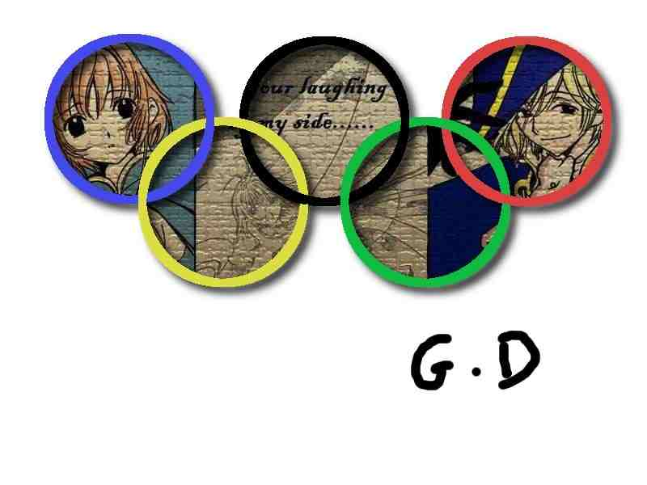

2011-2012 第二学期八年级图像处理教学设计
作者：TeliuTe 来源：基础教程网
二十四、学会使用图层面板 返回目录 下一课
（一）教学设计
1、学习目标：学会使用图层面板
2、注意事项：合并成两层即可，撤消早应该讲了
3、教学过程：
1）教师准备学案和板书；
2）学生整队进入，开机抄黑板上笔记；
3）教师讲解板书演示操作；
4）学生打指法、日志、完成操作；
5）教师打勾记录学生指法成绩，检查日志和操作；
注：学生抄完笔记就开始打指法、日志，老师讲完后再继续完成；
（二）板书设计(学生笔记)
第24课 学会使用图层面板
1、打开 23.xcf 找到右边的图层面板(和历史记录)
2、在图层上点右键、向下合并成两层
3、用叠加选区的方法，选中五个圆
4、复制一幅图像，编辑、粘贴为新图层
5、反选，编辑、清除多余图像、背景
6、查看历史记录，另存 xcf和jpg
--板书设计--
第23课 学会添加投影
1.打开24.xcf 检查右边图层面板五环
2.设法选中五个圆环 作成选区
3.点“滤镜” 光源和阴影 投影 颜色
4.另存为xcf和jpg 上传8—2
第24课 学会使用图层面板
1.打开23.xcf ，找到右边的图层面板
2.在图层上点右键，向下合并成两层
3.用叠加选取的方法，选中五个圆
4.复制一幅图像，编辑，粘贴新图层
5.反选，编辑，清除多余图像，背景
6.查看历史记录，另存xcf,jpg，传8-1
操作图示：

（三）课后记 2012-5-21 16:57
第一个班上完，第二个班来说调下课
等了会又没来，电话过去说是占了去写作业
--
再打电话没人接，估计是去写作业去了
不知道这些老师是怎么想的，毛病是惯出来的
--
本想着把历史记录讲一下，可是明显感觉学不动
只把面板讲一下，把五环做出来背景图
--
绕弯有些困难，步骤有些多还是脑瓜转不动
讲了一阵才转过弯，光想着玩的多、
--
把合并图层讲解一下，许多直接合并完了
还得把重点勾一下才好，用一幅图片简单些
--
2012-5-23 16:15
--
想了想还是把前面落下的课补一下，再给点时间把后面的构思好
两个班各上各自落下的课，后面还是学知识点，准备个好实例
--
2班先自己进来了，这个班有些随意性较大
根据上节课的情况，先批一顿没做出来和传到别的地方的
--
把选区留着自己绕弯，发现真是困难
平时都听习惯了，照着做才行这次自己去“设法”
--
发现问题当时就解决不能姑息，放纵就惯毛病
看到吃零食的，还有没做出来的，批一顿
--
1班先来几个，问了下上次课的事，阴差阳错
布置下去以后多沟通，这班有些说不上来的感觉
--
内容没多少难度，绕弯也有些困难
笔记详细些可以照着操作，基本都可以做出来效果
--
中间有个缩放工具，上次讲的时候会用
这次要调整一个图层，怎么也弄不出，用图层菜单解决
--
不经常用还是容易忘，要么就是工具的可操作性有问题
上次练习挺好的，这回实际操作反而不行了，待会再试试
--
返回目录 下一课
本教程由86团学校TeliuTe制作|著作权所有
基础教程网：http://teliute.org/
美丽的校园……
转载和引用本站内容，请保留作者和本站链接。